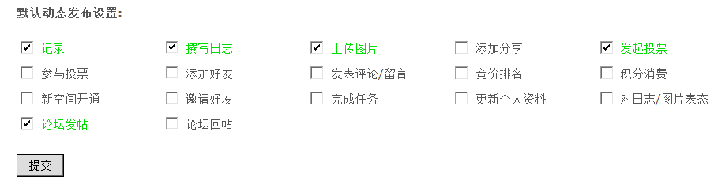

1.5. 空间设置¶
空间设置
通过空间设置可以对空间中的动态保留天数、首页动态显示数、热点推荐的天数范围、热点推荐的最小热度值、动态链接是否在新窗口打开、首页动态默认标签设置、默认记录提示内容等进行一系列基本的设置，同时还可以对新用户默认隐私设置，如：个人空间首页、好友列表、留言板、动态、记录、日志等项的隐私设置。
一、基本设置
操作路径：【后台】=>【全局】=>【空间设置】=>【基本设置】
1)动态保留天数
(默认为 7)个人动态的保留天数。超过该天数的个人动态会被清理掉，从而可以保证 MySQL 的效率。建议不要设置太长。
2)首页动态显示数
(默认为 100)首页显示的好友动态将从这些数目的事件中进行合并显示。建议不要设置太多，从而可以保证 MySQL 的效率，但最少不能低于50。
3)热点推荐的天数范围
(单位天，默认为 2天)设置首页热点推荐选择的天数范围。
4)热点推荐的最小热度值
设置当发布的信息热度值超过这里设置的值后，才会显示在推荐里面。如下图所示：
5)动态链接新窗口打开
如果选择“是”，用户阅读动态的时候，所有的链接都会在新窗口打开。
6)首页动态默认标签设置
好友数小于该值的时候显示所有人的动态，超过这个数值显示好友动态。如下图所示为好友数小于该值的情况。
在日志、相册列表页面，该参数同样生效。
有些站长经常会问，为什么我的首页动态里默认不是好友动态，而是全部的动态，就是因为登录的帐号好友数小于这里设置的值的原因。
7)首页显示热点的数目
(默认为 3)这里设置为0，则首页不显示热点推荐。最大不要超过10个。
系统会自动获取10个热点，其中，排名第一的热点会固定显示，其余热点会随机显示。
8)列表最大分页数
(默认为 100)允许用户查看的最大分页数。当用户查看的分页数越大的时候，对服务器的负载压力就越大。
9)邮件通知更新天数
(默认 0) 单位：天，当有人评论了某用户的日志或话题等操作，用户多少天没有登录站点的时候才会给其发送邮件通知；
设置为0，则不启用邮件通知功能。
10）开启日志回收站
打开此功能后，所有被删除的日志将放在回收站中，而不会被直接删除，防止误删而找不回的风险。
11)好友用户组个数
(默认为 8)设置每个用户最多拥有的好友用户组个数。
12)空间投票帖默认版块
选择一个空间投票帖默认发表到哪个版块，如果不选择默认发表的版块，发表空间投票帖时将提示选择的版块，如下图所示：

如果选择一个空间投票的默认版块，那么发表投票的时候，效果如下：
13)空间商品帖默认版块
选择一个空间商品帖默认发表到哪个版块
14)空间悬赏帖默认版块
选择一个空间悬赏帖默认发表到哪个版块
15)空间活动帖默认版块
选择一个空间活动帖默认发表到哪个版块
16)空间辩论帖默认版块
选择一个空间辩论帖默认发表到哪个版块
17）默认记录提示内容
一行为一个提示内容，这些内容将在记录发表框中显示，随机从这些默认提示中选取一行做为提示内容
在后台填写内容如下图所示：

在前台发表记录处的显示效果为：
二、隐私设置
设置新用户默认的隐私设置，比如默认那些信息是全站用户可见、那些是仅好友可见、那些仅自己可见、哪些仅注册用户可见，即游客是看不到的。
默认隐私设置项包括个人空间首页、好友列表、留言板、动态、记录、日志、相册、分享的隐私设置。
默认动态发布设置：设置论坛各操作动态发布与否，具体项目如下：
会员也可以自行设置个人隐私、个人动态发布以及动态筛选，位置在站点前台 => 设置 => 隐私筛选中